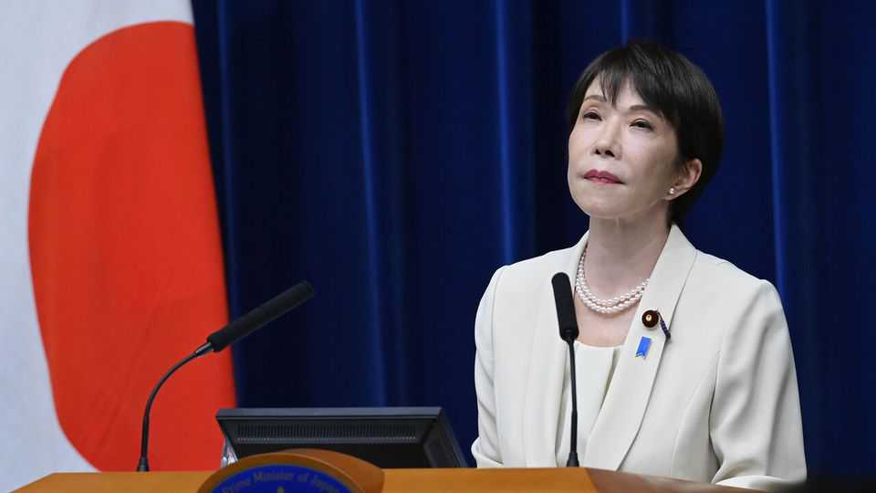
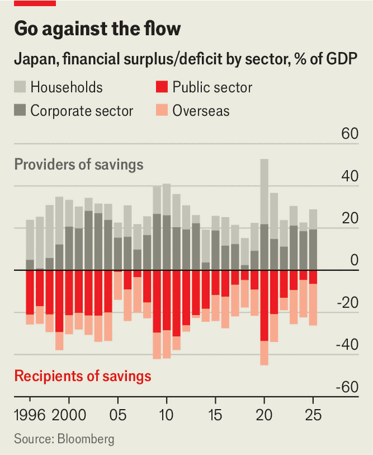

Japan pursues an ill-timed fiscal stimulus
Takaichi Sanae’s economic agenda bears little resemblance to her mentor’s

Jul 30th 2026
Takaichi Sanae, Japan’s prime minister since October, positions herself as heir to the late Abe Shinzo, the country’s longest-serving leader. Many expected her to revive his “Abenomics” agenda, with its “three arrows” of loose money, expansionary fiscal policy and structural reform. Two plans published this month instead signal a departure.
Whereas Abenomics sought to relegate Japan’s deflationary decades to history, Sanaenomics aims to steel Japan for geopolitical conflict. The honebuto, an annual economic blueprint, declares that Japan must keep pace with a global “Copernican revolution” in industrial policy. A new growth-strategy paper calls for ¥120trn ($733bn, or 18% of last year’s GDP) in new public investment by 2040, to catalyse ¥250trn in private capital. Cash is to be spread across 17 sectors and 62 products, from ships to chips. For good measure Ms Takaichi wants a cut in sales tax on food, too.
Of Abenomics’ three arrows, Sanaenomics keeps only one, fiscal stimulus. Though Ms Takaichi has pressed the Bank of Japan (BoJ) to keep interest rates low, it has raised them, from 0.5% when she took office to 1%. Political appetite for structural reform, such as boosting immigration and improving corporate governance, has waned. Yet it is an odd time for big-bang spending. Japan no longer faces a demand shortfall, as it did during the Abe years. Inflation has largely stayed above 2% since 2022, though it has dipped recently. The BoJ estimates that Japan has a positive “output gap” of 0.5%, implying that the economy is running slightly hot.

Sanaenomics justifies stimulus another way. Ms Takaichi fears losing economic sovereignty, especially to a bullying China. She believes that Japan has suffered from chronic underinvestment and “excessive austerity”. Real public investment remains around 8% below 2019 levels, notes Stefan Angrick of Moodys Analytics, a consultancy. That, say Sanaenomics’ advocates, has perpetuated Japan’s deepest economic rot: cash hoarding by its firms. Much of that flows into investment abroad. To bring it back home, Japan should use public investment to heat up its economy, argues Aida Takuji, a prominent Sanaeconomist. He advocates an output gap of 2%.
According to Ms Takaichi’s growth strategy, public investment will not only beget private investment but also raise employment, consumer confidence and profits, starting a “virtuous cycle” of growth; taxes will rise without a rise in tax rates. This focus on growth, in turn, underpins an ambivalence towards Japan’s fiscal limits. In the honebuto, the old budget target of achieving a primary surplus (excluding interest) has been replaced by one emphasising a falling debt-to-GDP ratio, from which new “bridging bonds” will be exempted. New multi-year budgeting will fund favoured projects while sidelining the cautious finance ministry, notes Tobias Harris of Japan Foresight, a consultancy.
Watering down the fiscal target could unshackle spending. Thanks to inflation, the net debt-to-GDP ratio, of around 130%, has been falling since the pandemic. That will continue for years so long as the nominal growth rate, now above 3%, exceeds the effective interest rate on Japan’s liabilities, which because of locked-in low rates is below 1%, estimates Goldman Sachs, a bank. The temptation is clear. As Mr Aida puts it: “The only fiscal burden is the interest cost. Strategic investments whose future benefits exceed their interest costs should therefore be financed through government bond issuance without hesitation.”
In practice, Sanaenomics will face tighter constraints than its architects imagine. One is the bond market. Ten-year yields have risen sharply this year, to 2.8% from 2% in January. A further sell-off would gradually raise financing costs. If the budget deficit swelled to around 2% of GDP but ten-year yields stayed near current levels, the debt ratio would fall for the next decade, estimates Goldman. Yet were yields to rise to 3.5%, it would stop falling after five. This creates a timing problem. Any growth from Ms Takaichi’s investments could take decades to materialise, but the borrowing to finance them will hit markets right away. And the bond market is more sensitive that it used to be, as once-reliable domestic investors have been replaced by pickier foreigners.
A second constraint is the BoJ, which looks likely to keep tightening. Every percentage point on interest rates costs the government an additional ¥5trn (0.7% of GDP) in interest, reckons Deutsche Bank. Ms Takaichi, who before taking office called rate hikes “stupid”, may be tempted to bring the central bank to heel, as Abe did. But bond markets may rebel if she does. Gruff language about the BoJ in a preliminary release of the honebuto last month coincided with a three-decade high in ten-year yields (the final version nodded to its independence).
Then there is inflation, where Ms Takaichi faces a dual bind. A spending-driven price surge would inflict pain on households, to which the cut in the sales tax on food is a response. But too little inflation, by dragging down nominal growth, could damage the fiscal outlook. The growth strategy simply envisions Japan threading the needle: 1% real growth with 2% inflation. But even 1% real growth requires a permanent boost to productivity. In an ageing, sluggish economy, that would be tricky even for an ambitious structural reformer, which Ms Takaichi is not. In effect, Sanaenomics is a bet that Japan’s capable bureaucrats can pick winners in 17 sectors so wisely that little else matters. Even for them, that is a tall order. ■